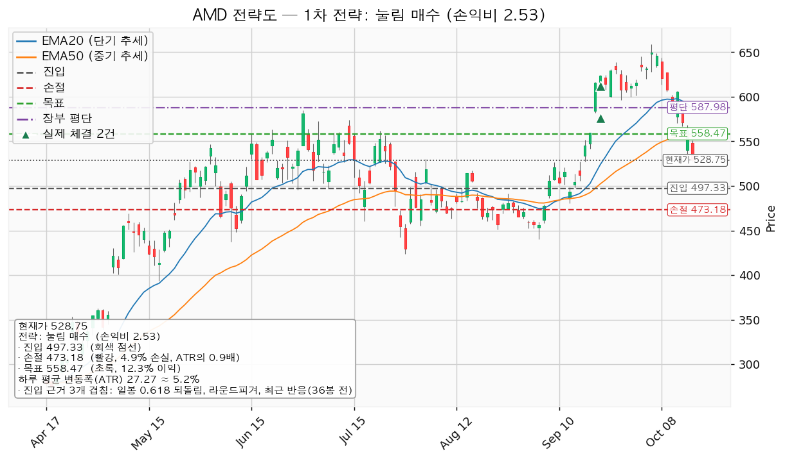
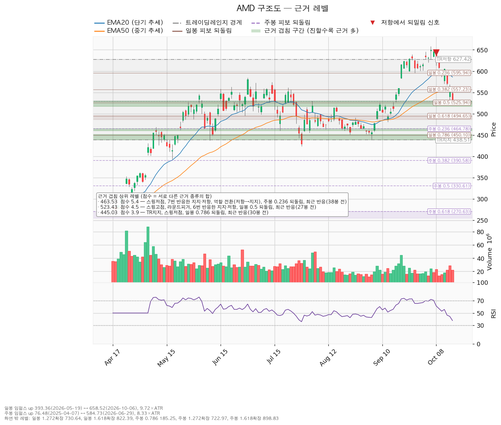
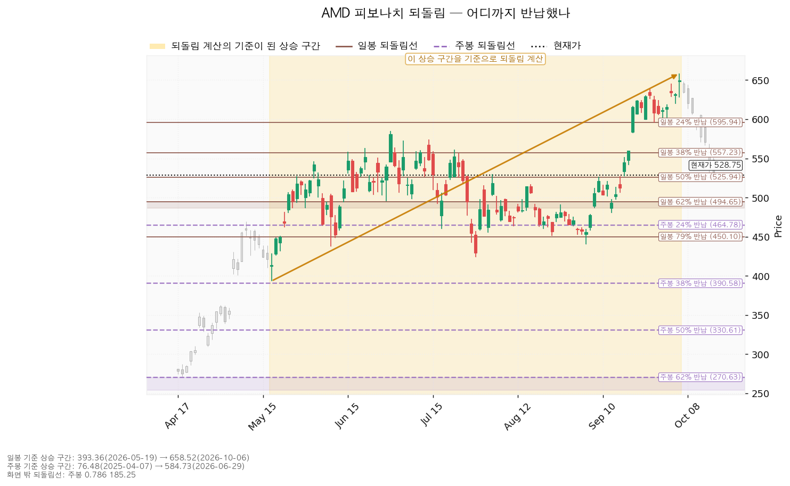
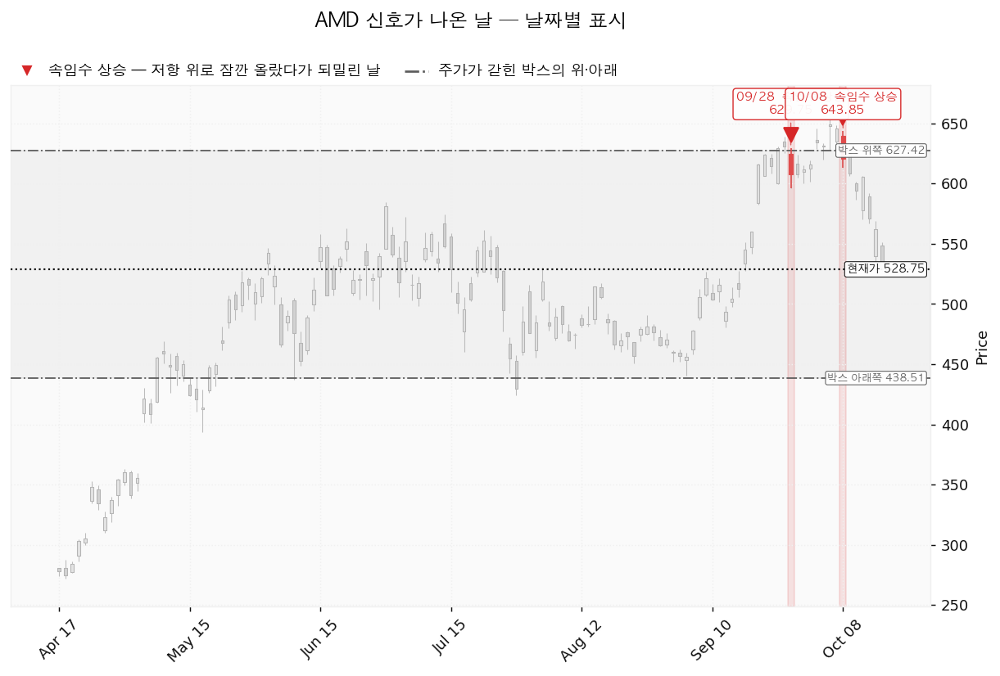

AMD(Advanced Micro Devices)는 PC·서버용 CPU와 데이터센터 GPU, 게임기용 반도체를 설계하는 미국 기업입니다.
| 구분 | 가격 | 판정 방식 | 현재 상태 |
|---|---|---|---|
| 진입선 (되돌림 매수) | 497달러 (-5.94%, 1.15 ATR 아래) | 저가 터치 지정가 | 미충족 |
| 집행 손절 | 473달러 (-10.51%, 2.04 ATR 아래) | 저가 터치 | 보유 3주에 지금부터 유효, 497달러 매수분에도 유효 |
| 관망 종료 기준 | 2026-11-04 실적 발표 | 그날까지 497달러 미체결, 또는 그 전에 558달러에 먼저 닿음 | 유지 중. 닿으면 매수 계획 종료 — 새 리포트 대기 (보유분은 그대로) |
| 회복선 · 목표 | 558달러 (+5.62%, 1.09 ATR 위) | 고가 터치 → 전량 매도 (목표 도달). 종가 회복은 매수 신호가 아님 | 회복 대기 |
| 확인선 | 583달러 (+10.27%, 1.99 ATR 위) | 일봉 종가 돌파 후 되돌림 지지 → 상승 확정, 새 리포트 | 미돌파 |
| 폐기선 | 439달러 (-17.07%) | 이탈 후 3거래일 내 회복 실패(또는 그 전에 411달러 아래 종가) + 반등에서 저항 확인 | 유지 중. 하루 평균 변동폭의 3.31배 아래라 실무상 작동하지 않음 |
497달러를 거치지 않고는 그 아래 가격에 닿을 수 없어, 매수를 접는 가격 기준선은 따로 두지 않고 날짜로 겁니다. 박스 상단 627달러는 확인선 위의 맥락입니다.
지수 대비 초과수익은 20일 -5.67% · 60일 -5.42% · 120일 +51.24%, 가중(20일 0.45 · 60일 0.30 · 120일 0.25) +8.64%입니다. 되돌림 구간인데 거래량이 줄지 않아 파는 쪽이 아직 남아 있습니다.
| 항목 | 내용 |
|---|---|
| 셋업 | 되돌림 매수 · 선취형(구조 미확인, 가중치 0.7) — 진입가는 유리하나 실패 확률이 높음 |
| 진입 | 497달러 저가 터치. 장부 평단 587.98달러 아래라 평단을 낮추는 매수(27주 평단 507.40달러) |
| 진입 근거 | 세 근거 겹침 — 일봉 0.618 되돌림 + 라운드피겨 500 + 36봉 전 반응 (495~500달러) |
| 손절 | 473달러 — 480~491달러 겹침 구간(라운드피겨 480 + 08-26 스윙고점) 안이 아니라 그 아래에 두어 손익비가 그만큼 낮아짐 |
| 목표 | 558달러 (EMA50 + 일봉 0.382 되돌림 + 라운드피겨 560 + 07-22 스윙고점) 단일 전량 매도, 트레일링 없음 |
| 손익비 | 1:2.53 (손절 0.89 ATR). 구조적 손절 기준 손익비는 산출되지 않았으나 손절이 이미 겹침 구간 아래라 같은 값 |
| 엣지 | 평균회귀 — 지지로 눌릴 때 산다. 승률이 높고 이익 폭이 작은 유형(일반적 성격이며 측정값 아님). 558달러 전량 매도와 정합 |
| 비중 | 24주 추가 · 15,924,904원 (계좌의 11.42%), 합계 27주 12.84% |
손익비 2.53 × 선취형 증명도 × 세 근거 겹침으로 대표가 됐습니다. 다른 후보인 558달러 종가 돌파 매수(돌파 확인형)는 손익비 1:0.51로 보류이며, 상대강도·거래량 배수(되돌림 0.893배, 돌파 0.943배)는 순서를 바꾸지 않았습니다. 분할하면 전 구간 손익비가 1:2.53에서 1:1.80(본전 스탑 하한 1:0.54)으로 내려가 단일 매도로 둡니다. 보유 3주(-10.07% · -237,065원)는 473달러에서 매도하면 -459,490원, 558달러에서 매도해도 -118,108원입니다. 558달러에서 전량 매도한 뒤 583달러 종가 돌파가 나오면 새 리포트로 다시 잡습니다.

| 단계 | 트리거 | 의미 | 행동 |
|---|---|---|---|
| 1 관찰 | 진입 뒤 일봉 종가가 497달러 아래로 마감 | 되돌아 올라오면 속임수 하락일 수 있어 아직 무효가 아님 | 추가 매수 중단, 집행 손절 유지 |
| 2 경고 | 이탈 후 3거래일 안에 497달러를 종가로 회복하지 못함, 또는 그 전에 일봉 종가가 470달러 아래로 마감 (하루 평균 변동폭의 1배만큼 더 밀림) — 둘 중 먼저 오는 쪽 | 되돌림 지지 상실 가능성이 우세 | 반등 시 497달러 반응 확인 |
| 3 무효 | 반등이 497달러에서 막히고 그 아래로 되밀림 | 구조 해석이 틀린 것으로 확정 | 보유 27주 전량 매도 (시나리오 폐기) |
집행 손절 473달러는 단계와 무관하게 저가가 닿으면 작동하며, 2단계의 470달러보다 위라 먼저 체결됩니다. 폐기선 439달러는 가격 기준으로 쓸 수 없으므로, 논지 무효화는 2026-11-04 실적에서 내년 EPS 컨센서스 15.76달러가 하향으로 돌아서거나 연간 영업현금흐름 흑자(2025년 77.09억달러)가 꺾이는 경우로 겁니다.
상승 전환 — 558달러 종가 회복 후 지지, 이어 583달러 종가 돌파. 보유분은 558달러에서 전량 매도하고 583달러 돌파 이후는 새 리포트로 잡습니다. 횡보 지속 — 439달러를 지키며 583달러 아래에서 매물을 소화하는 국면이며 부정적 신호가 아닙니다. 추적 항목은 지지 테스트 거래량(1.10 → 1.17 → 0.89 → 0.61 → 0.64 → 0.83배, 감소), 저점 절하가 절상으로 돌아서는지, 상승봉 대 하락봉 거래량비 1.14입니다. 시나리오 폐기 — 439달러 이탈 후 3거래일 내 종가 회복 실패(또는 그 전에 411달러 아래 종가)와 반등이 439달러에서 막히는 것을 확인하면 재분산으로 보고, 남은 보유가 있으면 전량 매도 (시나리오 폐기) 후 관망합니다.
| 가격 | 겹친 근거 | 최근 반응 |
|---|---|---|
| 580~586달러 | 라운드피겨 580 + EMA20 | 14봉 전 |
| 555~561달러 | EMA50 + 일봉 0.382 되돌림 + 라운드피겨 560 + 스윙고점 | — |
| 517~530달러 | 6번 반응한 지지·저항 + 스윙고점 둘 + 라운드피겨 520 + 일봉 0.5 되돌림 (현재가가 이 안) | 27봉 전 |
| 480~500달러 | 일봉 0.618 되돌림 + 라운드피겨 500·480 + 스윙고점 | 24·36봉 전 |
| 460~465달러 | 7번 반응한 지지·저항 + 저항에서 지지로 바뀐 자리 + 스윙저점 둘 + 주봉 0.236 되돌림 | 38봉 전 |
| 439~451달러 | 박스 하단 + 스윙저점 둘 + 일봉 0.786 되돌림 | 30봉 전 |
박스는 753개 일봉 중 최근 90봉으로 판정했습니다(안에 머문 비율 0.922, 방향 쏠림 0.27; 40봉은 쏠림 1.275, 180봉은 0.697로 박스가 아님). 직전 구간 189~514달러를 위로 돌파해 올라온 박스이고, 안쪽 판정은 중립입니다 — 지지 테스트마다 매도 거래량은 줄었지만 저점이 절하됐고 상승봉 거래량이 하락봉의 1.14배입니다. 국면 후보는 박스 상단의 속임수 돌파 둘을 근거로 분산이지만 안쪽 거래량은 분산 우위가 아니어서 재축적과 분산이 아직 갈리지 않았습니다.

일봉 되돌림은 393.36달러(05-19) → 658.52달러(10-06) 기준이며 0.382 557달러 · 0.5 526달러 · 0.618 495달러로, 현재가는 0.5 부근입니다. 주봉은 76.48달러 → 584.73달러 기준으로 직전과 같습니다.

날짜 신호는 속임수 돌파 둘(09-28 629.75달러, 10-08 643.85달러)입니다.

후행 PER 134.89배, 선행 33.56배로 벌어진 것은 EPS가 올해 +81.94%, 내년 +107.67%(15.76달러) 늘어나는 구간이기 때문입니다. 목표주가는 50명 평균 636.21달러, 최저 365.00달러, 최고 1,250.00달러이며 현재가는 평균보다 아래, 최저보다 위입니다. 가격이 52주 고점 대비 -19.71% 내리는 동안 내년 EPS 추정치는 90일 +17.0% · 30일 +1.2%로 올라 배수 수축이고 상향은 진행 중이므로 확인 항목은 다음 실적입니다. 현금흐름은 흑자입니다(2025-12-31 결산, 영업 +77.09억달러, 잉여 +67.35억달러, 설비투자 9.74억달러로 +53.1%). 목표 558달러는 내년 EPS 기준 35.45배로 현재 선행 33.56배보다 높아 상승분 일부를 배수 확장에 기대며, 평균 목표의 내재 배수는 40.38배입니다. 컨센서스는 12개월, 이 셋업은 수 주 시계입니다.
2026-11-04 3분기 실적 — 내년 EPS 15.76달러 상향 지속 여부. 그때까지 497달러에 닿지 않으면 이 매수 계획은 끝납니다. 다음 실적 이후 구간은 확인할 자료가 없습니다.
1% 리스크 기준 산출 비중은 계좌의 20.6%라 13% 상한(18,134,792원)을 적용해 합계 27주(17,915,517원, 12.84%, 환율 1,334.20원, 계좌 평가액은 2026-09-21 등록값)로 맞춥니다. 신규분 리스크는 계좌의 0.55%(773,302원), 보유 3주를 현재가에서 473달러까지 더하면 0.71%(995,727원)이고, 반도체 테마는 1.52% → 12.84%, 전체 미결제 리스크는 0.13% → 0.84%로 한도 안입니다. 하루 평균 변동폭은 주가의 5.16%로 8% 기준 아래지만 손절 폭 0.89 ATR은 하루 변동폭 안이라 평범한 하루 움직임에도 체결될 수 있고, 11-04 전에 진입해 실적을 넘겨 들고 가면 시가 갭으로 473달러보다 낮게 체결돼 손실이 계좌의 1%를 넘을 수 있습니다. 최종 판정: 497달러 되돌림 시 24주 매수, 473달러 손절, 558달러 전량 매도, 손익비 1:2.53. 조건 점검 5/9, 미달은 20일선 위·지수 대비 20일 초과수익·상대강도선 신고가·거래량 강도입니다.
용어: ATR = 하루 평균 변동폭(27.27달러). EMA = 지수이동평균. RSI = 상대강도지수(현재 37.8). EPS = 주당순이익. PER = 주가수익비율.